系统概述
了解 CleanNotes 清记的核心功能与系统架构
CleanNotes（清记）是一款个人高效记事本应用，集任务管理、笔记记录、周报生成、AI 助手于一体。系统采用 邮箱 + 密码 认证方式，数据通过云端服务器实时同步，支持多设备访问。
核心功能模块
| 模块 | 功能 | 适用场景 |
|---|---|---|
| 首页概览 | 今日任务、统计卡片、热力图、趋势图 | 快速了解工作状态 |
| 任务管理 | 任务 CRUD、6 种视图、日历、回收站 | 日常任务规划与跟踪 |
| 待办事项 | 记录尚未排期的灵感与想法 | 快速捕获未来任务 |
| 备忘录 | 富文本编辑、Mermaid 图表、文件附件 | 知识管理与笔记记录 |
| 周报 | 自动汇总、AI 总结、海报导出 | 周度工作复盘 |
| AI 助手 | 任务分析、优先级建议、智能拆解 | 智能辅助决策 |
| 设置 | 账号管理、主题切换、AI 配置、用户审核 | 个性化配置 |
| 常用工具 | PDM 表重建工具 | 数据库脚本生成 |
| 移动端 | H5 适配、天气特效、手势交互 | 移动办公 |
主题系统
| 主题 | 主色调 | 说明 |
|---|---|---|
| 腾讯蓝 | ● #0052D9 | 默认主题，蓝色系，清爽专业 |
| ZURU | ● #E53935 | 品牌红主题，活力醒目 |
| 深色 | 深色背景 | 暗黑模式，护眼夜间使用 |
| 跟随系统 | 自动切换 | 浅色时使用腾讯蓝，深色时使用深色模式 |
1. 密码采用行业标准的 bcrypt 哈希存储，任何人（包括管理员）均无法查看明文密码。
2. 数据库启用 RLS（行级安全）策略，每个用户只能访问自己的数据。
3. API Key 采用客户端 AES-GCM 加密存储。
4. 新用户注册需管理员审核通过后方可登录使用。
登录与注册
系统访问、账户登录、注册审核、密码重置全流程
2.1 访问系统
在浏览器地址栏输入系统访问地址即可打开登录页面。系统支持 PC 端和移动端自动适配——在手机浏览器中打开会自动跳转到 H5 移动端版本。
推荐使用 Chrome 90+、Edge 90+、Safari 14+ 或 Firefox 88+。需启用 JavaScript 和 Cookie。
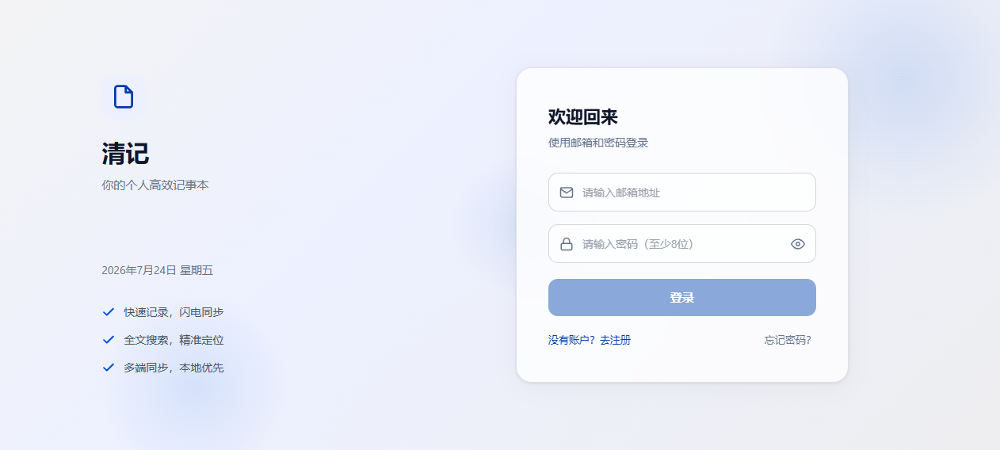
2.2 登录操作
输入邮箱地址
在邮箱输入框中输入已注册的邮箱地址。系统会实时验证邮箱格式。
输入密码
在密码输入框中输入密码。可点击右侧眼睛图标切换密码的显示/隐藏状态。
点击「登录」按钮
邮箱和密码均填写后，按钮从灰色禁用态变为蓝色激活态。点击后进入加载状态。
登录成功
验证通过后自动跳转到系统首页。若登录失败，页面底部显示红色错误提示。
• 邮箱或密码错误：检查大小写、输入法状态
• 账号待审核：新注册账号需管理员审核通过后才能登录
• 账号被拒绝：管理员拒绝了注册申请，请联系管理员
• 网络异常：检查网络连接是否正常
2.3 注册新账户
切换到注册模式
在登录页面底部点击「没有账户？去注册」链接。
填写注册信息
依次输入：邮箱地址、密码（至少 8 位）、确认密码、昵称（可选）。
提交注册
点击「注册」按钮提交。注册成功后显示提示：「注册成功！请等待管理员审核后登录。」
等待审核
注册后账号状态为「待审核」。管理员审核通过后即可登录。
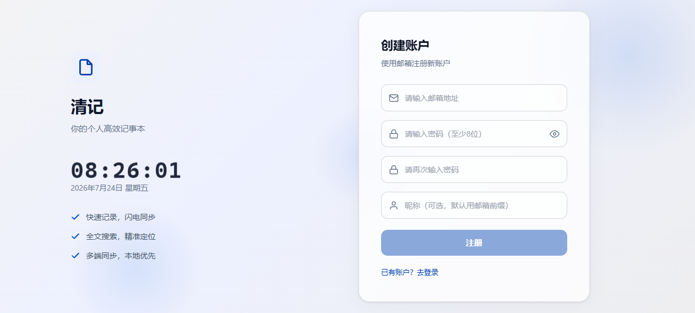
2.4 忘记密码
点击「忘记密码？」
在登录页面底部找到「忘记密码？」链接，点击进入密码重置流程。
输入注册邮箱
输入注册时使用的邮箱地址，系统会向该邮箱发送密码重置链接。
查收邮件
打开邮箱，找到标题为「重置您的 CleanNotes 密码」的邮件，点击「设置新密码」按钮。
设置新密码
链接跳转回应用后，设置页面顶部显示黄色重置横幅。输入新密码并确认，点击「设置新密码」完成重置。
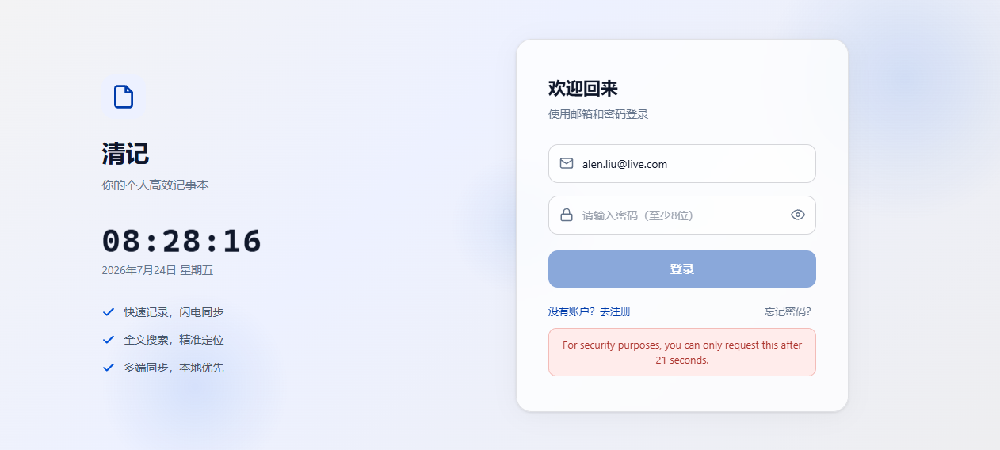
邮件发送服务有速率限制（约 4 封/小时）。如果未收到邮件，请检查垃圾邮件文件夹或稍后重试。
首页概览
登录后的主界面，快速掌握工作全貌
首页是登录后的默认页面，集中展示今日任务状态、统计数据、工作趋势等核心信息。
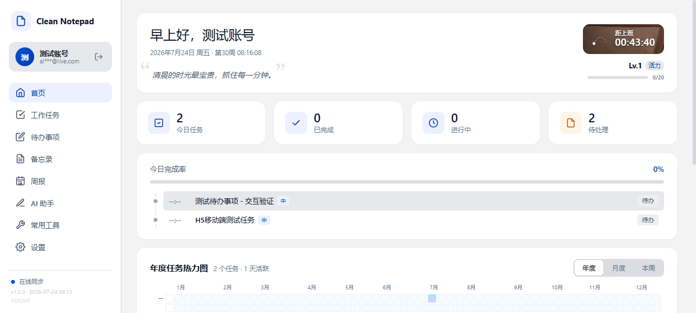
3.1 功能区域说明
| 区域 | 功能 | 交互 |
|---|---|---|
| Hero 卡片 | 分时段问候语、日期、距离上班时间倒计时 | 点击精力区域跳转精力系统 |
| 统计卡片 | 今日任务、已完成、进行中、待处理数量 | 数字实时更新 |
| 今日进度条 | 当日任务完成百分比 | 绿色填充表示进度 |
| 今日任务列表 | 展示当天需要处理的任务 | 点击任务跳转任务管理 |
| 任务热力图 | GitHub 风格日历热力图，5 级颜色深度 | 支持年/月/周视图切换 |
| 任务趋势图 | 折线图展示近期任务完成趋势 | 悬停查看具体数值 |
3.2 左侧导航栏
左侧导航栏固定显示，包含以下元素：
- 品牌 Logo：CleanNotes 标识
- 用户卡片：头像（首字母）、昵称、邮箱
- 导航菜单：首页、工作任务、待办事项、备忘录、周报、AI 助手、常用工具、设置
- 在线状态：显示云端同步状态
- 版本号：底部显示当前版本与构建时间
3.3 精力成长系统
首页 Hero 区域展示精力等级和经验进度条。完成任务获得经验值（XP），积累升级提升精力等级。
| 精力状态 | 条件 | 效果 |
|---|---|---|
| 活力 | 正常签到且近期完成任务 | 正常获取经验 |
| 复苏 | 断签后重新签到 | 经验获取正常 |
| 倦意 | 连续多日未签到 | 经验获取减半 |
任务管理
任务的创建、编辑、状态管理、多视图查看与回收站
任务管理是系统的核心模块，支持日历视图、6 种时间维度视图、状态筛选、优先级管理、回收站等完整功能。
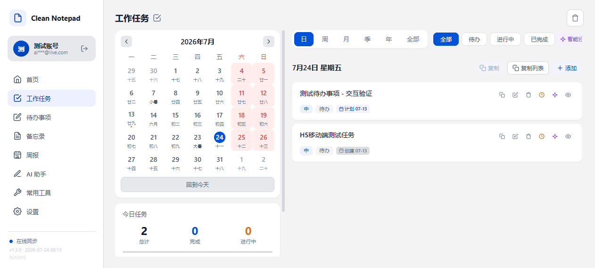
4.1 创建任务
点击「+ 添加」
在任务列表右上方点击「+ 添加」按钮，弹出任务编辑弹窗。
填写任务信息
在弹窗中填写：任务标题（必填）、任务描述（可选）、优先级（高/中/低）、计划执行日期、截止日期。
保存任务
点击「保存」按钮，任务创建成功并出现在列表中。新任务默认状态为「待办」。
4.2 编辑任务
点击任务卡片上的编辑图标，可打开编辑弹窗修改任务信息。编辑弹窗支持修改标题、优先级、状态、计划时间、描述等字段。
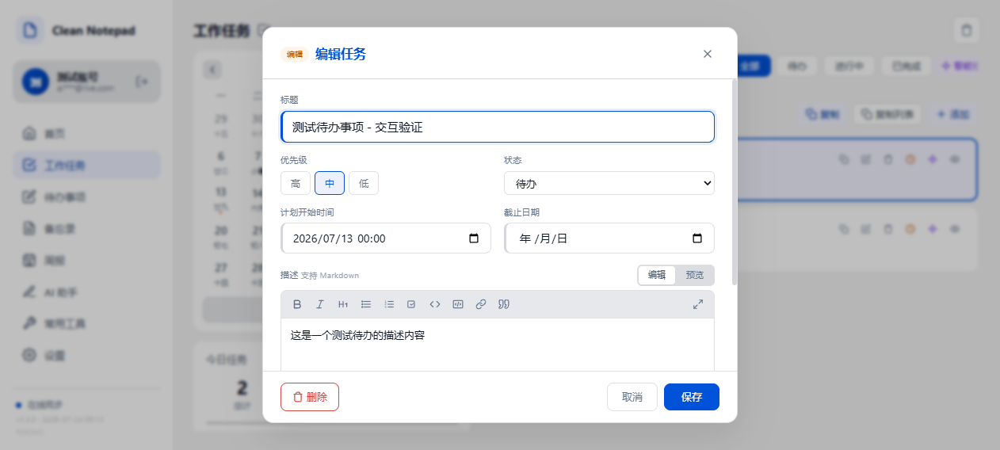
4.3 任务状态管理
任务有三种状态，可通过点击任务卡片左侧的状态圆圈循环切换：
| 状态 | 图标 | 说明 |
|---|---|---|
| 待办 | 空心圆 | 新创建的任务，尚未开始执行 |
| 进行中 | 实心圆 | 正在执行中的任务 |
| 已完成 | 勾选圆 | 已完成的任务，标题显示删除线 |
待办 → 进行中 → 已完成 → 待办。未来日期的任务锁定为「待办」状态，不可切换。
4.4 六种视图模式
| 视图 | 范围 | 附加功能 |
|---|---|---|
| 日 | 选中日期的任务 | 复制选中任务、复制列表、快速添加 |
| 周 | 本周（周一~周日） | 按天分布柱状图 |
| 月 | 当月任务 | 按周分布图 |
| 季 | 当季度任务 | 按月分布图 |
| 年 | 当年任务 | 按月分布图 |
| 全部 | 全局任务概览 | 4 维统计卡片、逾期任务、高优待处理、状态分布条 |
4.5 优先级
| 优先级 | 标签色 | 说明 |
|---|---|---|
| 高 | 高 | 紧急且重要，需优先处理 |
| 中 | 中 | 常规优先级 |
| 低 | 低 | 非紧急，可延后处理 |
4.6 任务卡片操作
鼠标悬停在任务卡片上时，右侧显示操作按钮组：
| 按钮 | 功能 |
|---|---|
| 复制 | 复制任务到当前日期 |
| 编辑 | 打开编辑弹窗修改任务信息 |
| 时间 | 快速修改计划执行时间 |
| AI | 跳转 AI 助手分析该任务 |
| 查看 | 查看任务详情 |
| 删除 | 移入回收站（需确认） |
4.7 待办事项
待办事项是尚未排期、未转化为正式任务的灵感与想法。等时机成熟时可将其转为任务执行。
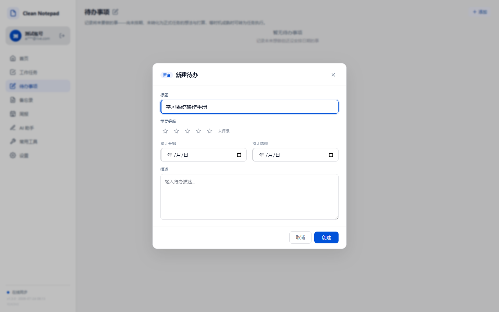
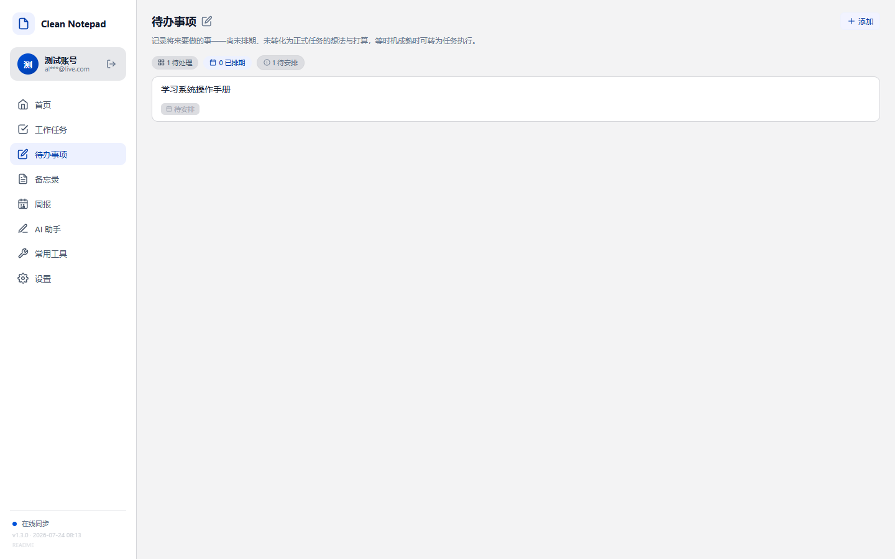
4.8 回收站
删除的任务移入回收站，点击页面右上角的「回收站」按钮查看。
| 操作 | 说明 |
|---|---|
| 恢复 | 将任务恢复到原状态 |
| 永久删除 | 彻底删除，不可恢复（需确认） |
| 清空回收站 | 一次性删除所有回收站任务（需确认） |
回收站中的任务超过 7 天将被自动永久删除。每个任务右侧显示剩余天数倒计时。
4.9 AI 快捷入口
任务管理页面提供 3 个 AI 快捷按钮：
- 智能分析：分析今天的任务，给出优先级建议
- 逾期处理：分析逾期任务，给出处理建议
- 任务拆解：将大任务拆解为更小的可执行步骤
备忘录
富文本笔记编辑、Mermaid 图表、文件附件、标签管理
备忘录模块提供完整的富文本编辑体验，支持 Markdown 语法、Slash 命令、Mermaid 图表、思维导图、文件附件等高级功能。
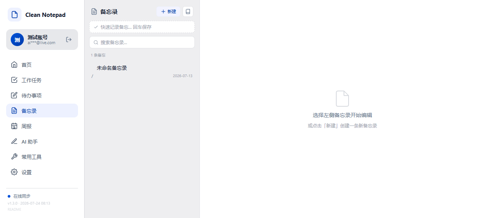
5.1 创建备忘录
新建备忘录
点击左上角「+ 新建」按钮，或使用快捷键 Ctrl+N。也可从「从模板新建」下拉菜单选择预设模板。
选择图标与标题
点击标题左侧的图标选择器从多种 Emoji 中选择，然后在标题输入框输入备忘录标题。
编辑内容
在富文本编辑器中编写内容。支持 Markdown 语法输入、Slash 命令、工具栏格式化等多种编辑方式。
添加标签
在底部标签区域输入标签名称，回车添加。标签用于分类和筛选。
自动保存
内容修改后自动保存到云端，右上角显示「自动保存 ✓」标识。
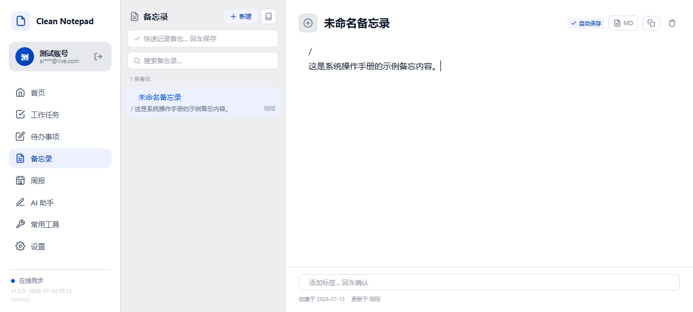
5.2 快速捕获
侧边栏顶部的虚线输入框支持快速捕获灵感——输入文字后直接按回车，即可创建一条新备忘录，无需打开完整编辑器。
5.3 Slash 命令面板
在编辑器中输入 / 即可唤出命令面板，快速插入各种内容块：
| 分类 | 命令 | 说明 |
|---|---|---|
| 基础块 | H1 / H2 / H3 | 三级标题 |
| 无序列表 / 有序列表 | 项目符号 / 编号列表 | |
| 待办清单 | ☑ 可勾选的任务清单 | |
| 高级块 | 引用块 | 引用文本块 |
| 提示块 | 彩色背景的提示信息块 | |
| 折叠块 | 可展开/收起的内容区域 | |
| 代码块 | 语法高亮代码 | |
| 嵌入 | 表格 | 可编辑的表格 |
| Mermaid 图表 | 流程图、时序图等 | |
| 思维导图 | 树状思维导图 | |
| 链接备忘 | 通过 [[]] 引用其他备忘录 |
5.4 文件附件
- 允许类型：PDF、Word、Excel、PPT、图片、压缩包、文本等 19 种
- 大小限制：单个文件 ≤ 5MB
- 存储：文件上传到云端存储，公开 URL 嵌入备忘录
5.5 其他功能
| 功能 | 操作 |
|---|---|
| 置顶 | 点击标题栏图钉图标，置顶备忘录显示在列表顶部 |
| 搜索 | 侧边栏搜索框实时过滤备忘录列表 |
| 标签筛选 | 点击标签名筛选包含该标签的备忘录 |
| 导出 | 复制为 Markdown 或纯文本 |
| 图片灯箱 | 双击图片全屏查看 |
| 备忘录关联 | 输入 [[]] 引用其他备忘录 |
周报
自动汇总周度数据、AI 智能总结、海报导出
周报模块自动汇总每周的任务完成情况、待办事项、统计数据，并支持 AI 生成智能总结和海报模式导出。
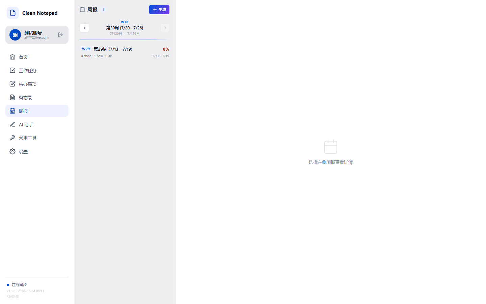
6.1 生成周报
选择周次
使用侧边栏的左右箭头切换到目标周次，或直接点击列表中的历史周报查看。
点击「+ 生成」
系统分两阶段生成：第一阶段立即生成统计概览和任务明细表格；第二阶段异步调用 AI 生成智能总结。
等待 AI 总结
AI 总结区域显示加载动画。生成完成后显示总结内容；如果失败，可点击「重新生成」重试。
查看或导出
周报生成后可直接在页面查看，也可点击海报按钮进入海报模式，通过浏览器打印为 PDF 或图片。
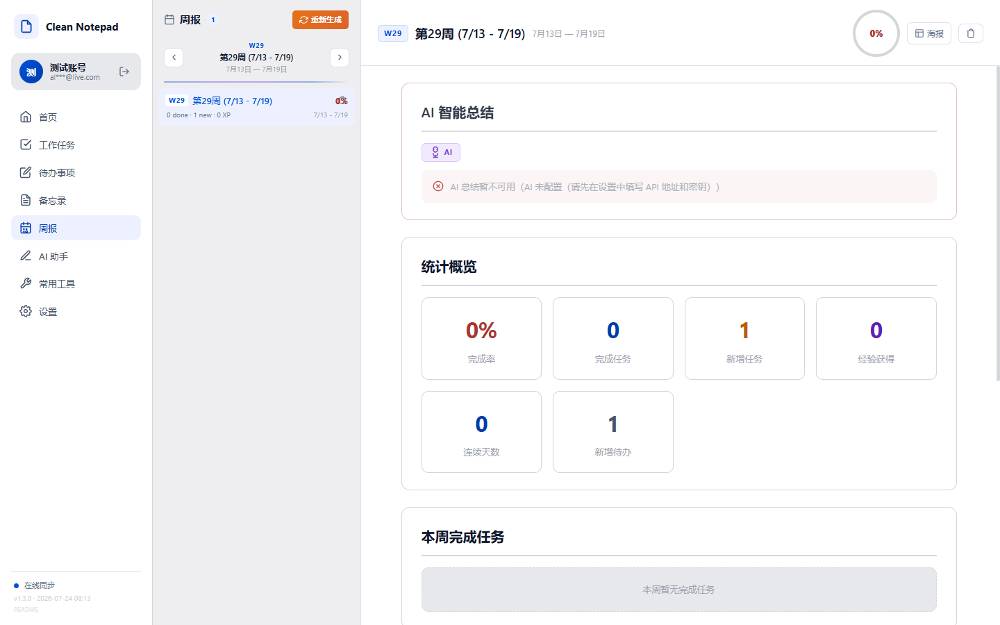
6.2 周报内容结构
| 区域 | 内容 |
|---|---|
| AI 智能总结 | AI 根据本周数据生成的文字总结，包含完成情况分析和建议 |
| 统计概览 | 完成率、完成任务、新增任务、经验获得、连续天数、新增待办 |
| 任务明细表 | 本周所有任务的名称、优先级、状态、完成时间 |
| 本周完成任务 | 已完成的任务列表 |
| 完成率圆环 | SVG 圆环显示完成百分比（≥80% 绿色，≥50% 黄色，<50% 红色） |
6.3 海报模式
点击周报详情区的海报图标，进入海报模式。海报模式将周报渲染为适合分享的竖版卡片布局，可通过浏览器打印功能导出为 PDF 或 PNG 图片。
AI 总结功能需要在设置页面配置 AI API 地址、API Key 和模型名称后才能使用。支持 OpenAI 兼容格式的 API（如 DeepSeek、通义千问等）。
AI 助手
智能任务分析、优先级建议、任务拆解
AI 助手提供对话式交互界面，基于你的任务数据提供智能分析和建议。支持从任务管理页面快速发起 AI 分析。
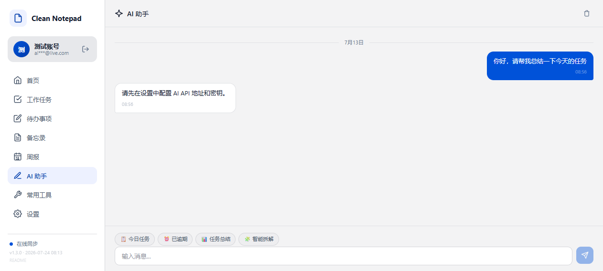
7.1 快捷提问
对话区顶部提供 4 个快捷标签，点击后自动发送预设提示词：
| 标签 | 提示词 | 用途 |
|---|---|---|
| 今日任务 | 「帮我看看今天的任务，给个优先级建议」 | 获取今日任务优先级排序 |
| 已逾期 | 「有哪些已逾期的任务？我该怎么处理？」 | 查看逾期任务和处理建议 |
| 任务总结 | 「总结一下我最近的任务完成情况」 | 获取近期完成情况分析 |
| 智能拆解 | 「帮我分析当前待办任务，把大任务拆解为小步骤」 | 将大任务拆解为可执行步骤 |
7.2 手动提问
在底部输入框输入问题后发送，AI 将基于任务上下文进行回复。若 AI 配置未设置，系统会提示先配置 API 地址和密钥。
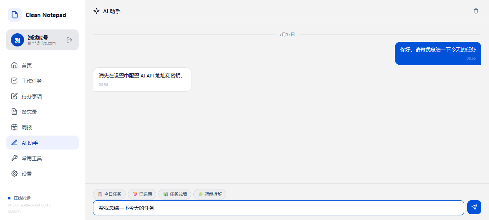
7.3 从任务管理发起 AI 分析
任务管理页面提供多个入口快速跳转到 AI 助手：
- 智能分析：分析当天任务，给出优先级建议
- 逾期处理：分析逾期任务，给出处理建议
- 任务拆解：将待办任务拆解为更小的步骤
- 单任务 AI 按钮：任务卡片上的紫色 AI 按钮，分析单个任务
使用 AI 助手时，任务标题、状态、优先级等信息将作为上下文发送给 AI 服务提供商。请勿在任务中包含敏感信息。
设置
账号管理、主题切换、AI 配置、用户审核（管理员）
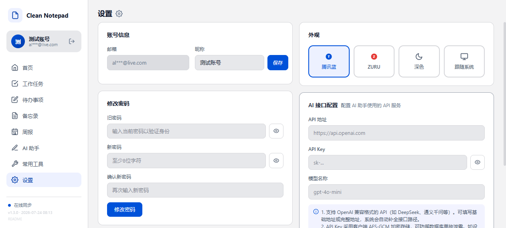
8.1 账号信息
| 设置项 | 说明 |
|---|---|
| 邮箱 | 只读显示，脱敏处理（如 al***@domain） |
| 昵称 | 可编辑，保存后立即生效 |
8.2 修改密码
输入当前密码
验证当前密码以确保操作安全。
输入新密码
新密码至少 8 位。
确认新密码
再次输入新密码，确保两次输入一致。
保存
点击「修改密码」按钮完成密码修改。
8.3 外观主题
| 主题 | 说明 |
|---|---|
| 腾讯蓝 | 蓝色主色调 #0052D9，清爽专业 |
| ZURU | 红色主色调 #E53935，品牌主题 |
| 深色 | 暗黑模式，深色背景配浅色文字 |
| 跟随系统 | 自动检测系统主题偏好，浅色→腾讯蓝，深色→深色模式 |
8.4 AI 配置
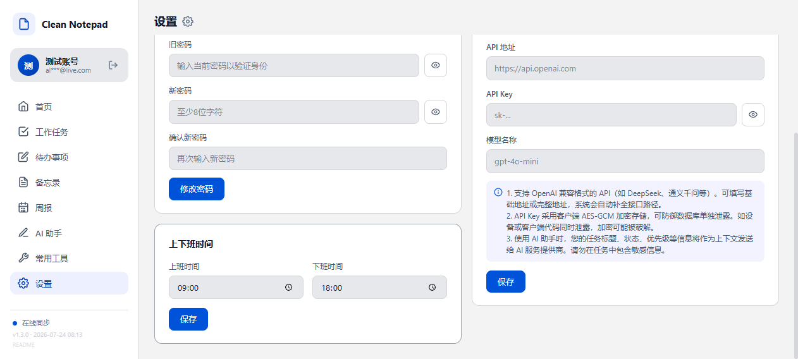
| 配置项 | 说明 |
|---|---|
| API 地址 | OpenAI 兼容格式，可填写基础地址或完整地址，系统自动补全路径 |
| API Key | 密码输入框，可切换显示/隐藏。采用客户端 AES-GCM 加密存储 |
| 模型名称 | 如 gpt-4o-mini、deepseek-chat 等 |
1. 支持 OpenAI 兼容格式的 API（如 DeepSeek、通义千问等）。
2. API Key 采用客户端 AES-GCM 加密存储，可防御数据库单独泄露。
3. 使用 AI 助手时，任务信息将作为上下文发送给 AI 服务提供商，请勿在任务中包含敏感信息。
8.5 上班时间
设置上班和下班时间，用于任务时间统计和精力系统计算。
8.6 用户审核管理（仅管理员）
管理员账号（shzalen@163.com）登录后，设置页面底部显示用户审核管理面板。功能包括：
| 功能 | 说明 |
|---|---|
| 统计概览 | 总用户数、待审核数、已通过数、已拒绝数 |
| 用户列表 | 表格显示所有用户的邮箱、昵称、状态、注册时间 |
| 通过审核 | 将待审核用户状态改为「已通过」 |
| 拒绝注册 | 将待审核用户状态改为「已拒绝」（管理员账号不显示拒绝按钮） |
| 重置密码 | 向已通过用户发送密码重置邮件（需确认） |
8.7 密码重置横幅
当通过密码重置邮件链接进入设置页面时，顶部显示黄色重置横幅，可直接设置新密码（无需输入旧密码）。设置完成后横幅自动消失。
常用工具
PDM 表重建工具及其他实用工具
常用工具模块提供开发与运维辅助工具，当前包含 PDM 表重建工具。左侧为工具子菜单，右侧为工具内容区。
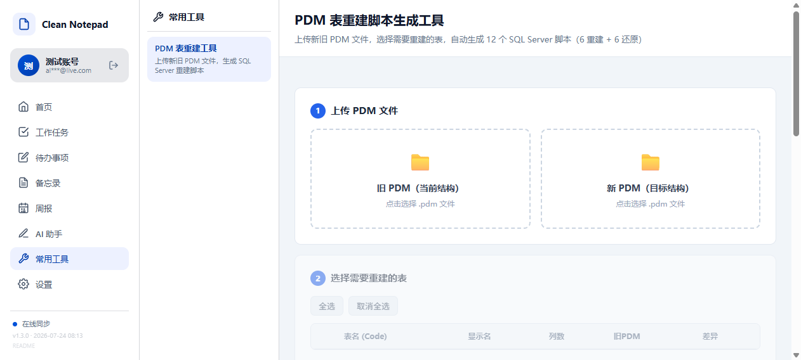
9.1 PDM 表重建工具
PDM（Physical Data Model）表重建工具用于对比新旧 PDM 文件，生成 SQL Server 重建脚本。
上传 PDM 文件
上传新旧两个 PDM 文件（.pdm 格式），系统解析其中的表结构定义。
选择表
系统列出所有表，勾选需要重建的表。支持全选/反选。
生成脚本
点击「生成脚本」按钮，系统根据新旧 PDM 差异生成 SQL Server DDL 脚本（包含 DROP、CREATE、INSERT 等语句）。
下载或复制
生成完成后可下载 .sql 文件或直接复制脚本内容。
常用工具模块采用模块化架构，后续可添加更多工具。Vue 工具组件放在 src/views/tools/，静态 HTML 工具放在 public/tools/。
移动端
H5 移动端适配，支持手机浏览器访问
系统提供独立的 H5 移动端版本，在手机浏览器中打开系统地址会自动跳转到移动端。移动端与 PC 端共享同一账号和数据，实现无缝跨设备使用。
10.1 移动端入口
在手机浏览器中输入系统访问地址，系统自动检测设备类型并跳转到 /mobile.html。也可在 PC 端浏览器中手动访问 /mobile.html 预览移动端界面。
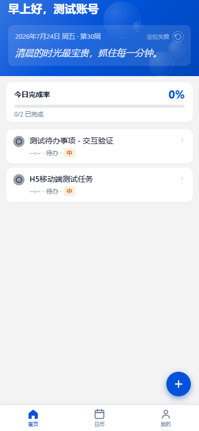
10.2 底部导航
移动端采用底部 Tab 栏导航，包含 3 个主要标签：
| Tab | 功能 |
|---|---|
| 首页 | 任务概览、问候卡片、今日完成率 |
| 日历 | 月历视图，查看每日任务 |
| 我的 | 个人中心、设置、登出 |
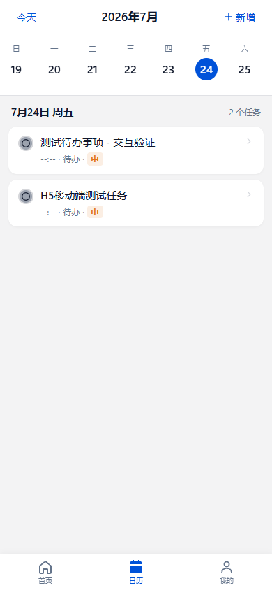
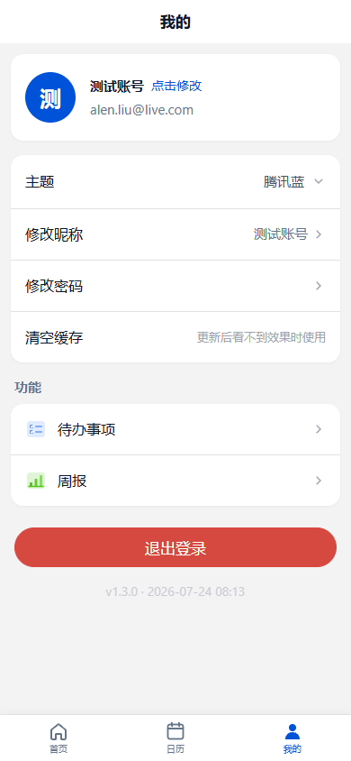
10.3 特色功能
| 功能 | 说明 |
|---|---|
| 天气沉浸式特效 | 根据实时天气显示雨滴、雪花、星空等粒子动画 |
| 时段问候语 | 根据当前时间显示不同问候（早上好/下午好等） |
| 触摸手势 | 支持滑动手势切换页面、左滑删除等 |
| 音效反馈 | 完成任务时播放提示音 |
| 下拉刷新 | 下拉刷新页面数据 |
| 底部弹出面板 | 任务创建/编辑/详情使用底部 Sheet 弹出 |
| PWA 支持 | 可添加到手机桌面，全屏体验 |
快捷键
提高操作效率的键盘快捷键
| 快捷键 | 功能 | 适用位置 |
|---|---|---|
Ctrl + N | 新建备忘录 | 备忘录页面 |
/ | 唤出 Slash 命令面板 | 富文本编辑器 |
[[ | 插入备忘录链接 | 富文本编辑器 |
Enter | 快速捕获保存 | 备忘录侧边栏快速捕获框 |
Esc | 关闭弹窗/对话框 | 全局 |
富文本编辑器还支持多种 Markdown 输入规则，如输入 # + 空格自动转为 H1 标题，- + 空格转为无序列表等。
常见问题
使用过程中可能遇到的问题与解决方案
/mobile.html 访问。